ECG Blog #164 — PAC hay Wenckebach ... ?
Dải nhịp dài chuyển đạo II trong Hình-1 được gửi cho tôi mà không kèm thông tin lâm sàng. Tiếc là không có điện tâm đồ 12 chuyển đạo của bệnh nhân này …
- Bạn đọc nhịp trong Hình-1 như thế nào?
- Trên đường đi tới chẩn đoán nhịp trên điện tâm đồ — có cả loạt nhận xét nên được đưa ra. Bạn nêu được bao nhiêu nhận xét trong số đó?
- Dụng cụ nhỏ nào mà các chuyên gia đọc nhịp thường xuyên mang theo bên mình — sẽ vô cùng hữu ích để đánh giá nhịp này?

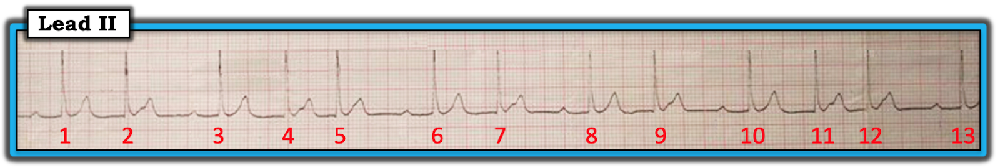
=========================
- LƯU Ý #1: Dải nhịp dài chuyển đạo II này được ghi ở tốc độ ghi chuẩn 25 mm/giây. Dù có biến dạng nhẹ do lưới giấy điện tâm đồ bị nghiêng một chút — chất lượng bản ghi này vẫn thừa đủ để đọc.
=========================
Hệ thống đọc nhịp của tôi:
Sau khi đã nhìn bệnh nhân để đánh giá tình trạng ổn định huyết động — có 5 thông số MẤU CHỐT cần đánh giá khi đọc bất kỳ nhịp nào. 5 thông số này dễ nhớ nhờ câu "Hãy để ý các P, các Q & 3 chữ R". Đánh giá 5 thông số này theo trình tự nào không quan trọng — và chúng tôi thường thay đổi trình tự tìm chúng tùy theo bản ghi đang xem. Điều quan trọng là phải chắc chắn bạn đã xét từng thông số trong 5 thông số này với mọi dải nhịp bạn gặp. HÃY TÌM:
- Sóng P (hay tốt hơn nữa, tìm sự có mặt hay vắng mặt của hoạt động nhĩ ).
- Thời gian QRS (Chúng tôi coi bất kỳ QRS nào có thời gian hơn nửa ô lớn trên giấy điện tâm đồ là “rộng” [ = >0.10 giây] ).
- Tần số (Rate) của nhịp.
- Nhịp có đều (Regular) không?
- Và NẾU có sóng P — sóng P có liên quan (Related) với các phức bộ QRS kế cận không? (tức là sóng P có được dẫn truyền không?).
=========================
- BẤM VÀO ĐÂY — để xem giải thích chi tiết hơn về Cách tiếp cận “Ps, Qs & 3R” đọc nhịp của tôi. (Nếu bạn bấm vào SHOW MORE bên dưới video này trên trang YouTube — Bạn sẽ thấy Mục lục chi tiết có liên kết tới mọi nội dung trong video!).
====================================
Cách tiếp cận của tôi với nhịp trong Hình-1:
====================================
Nhịp trong Hình-1 là một bản ghi phức tạp! Tôi hoàn toàn thừa nhận mình không chắc chắn 100% về chẩn đoán cuối cùng. Tuy vậy — tôi tin rằng bằng cách tiếp cận có hệ thống, chúng ta có thể suy ra câu trả lời có khả năng nhất. Cách tiếp cận từng-bước của tôi để đọc bản ghi này như sau:
- Về đánh giá các thông số các P, các Q & 3R — phức bộ QRS hẹp — nhịp thất không đều — nhưng có một số sóng P! Có vẻ như ít nhất một số sóng P này có liên quan với các phức bộ QRS kế cận (Chi tiết hơn về nhịp sóng P ở bên dưới). Vì phức bộ QRS hẹp — nhịp này là nhịp trên thất.
- Nhận xét #1: Có nhịp theo nhóm (group beating). Điều này dễ nhận ra nhất bằng cách lùi lại một chút khi nhìn nhịp trong Hình-1. Như vậy, có 3 nhóm mỗi nhóm 2-nhát (các nhát #1-2; #6-7; và #8-9) — và 2 nhóm mỗi nhóm 3-nhát (các nhát #3,4,5; và các nhát #10,11,12). Nhận ra nhịp theo nhóm có ích — vì nó ngay lập tức cho ta biết có thể đang có một dạng dẫn truyền Wenckebach nào đó.
- LƯU Ý: Có những lý do khác có thể gây ra nhịp theo nhóm — bao gồm nhịp đôi hoặc nhịp ba nhĩ hay thất. Tuy vậy — nhận ra sớm nhịp theo nhóm khiến ta cảnh giác, và điều này giúp ta nhận ra nhanh hơn một rối loạn dẫn truyền Wenckebach khi có.
- ĐIỂM THEN CHỐT (PEARL): TRƯỚC KHI đi tiếp — hãy tìm một cái COMPA ĐO (CALIPERS)! Cũng như với các loạn nhịp rất khó khác — tôi đoán rằng bạn sẽ không thể nhận ra (hay đọc được) những chi tiết tinh tế của nhịp phức tạp này nếu không (cho đến khi) dùng compa đo.
=========================
Vì ta đã xác định nhịp trong Hình-1 là nhịp trên thất và có nhịp theo nhóm — MẤU CHỐT tiếp theo để đánh giá nhịp là tìm kiếm để nhận ra mọi dấu hiệu của hoạt động nhĩ.
- Nhận xét #2: Bắt đầu bằng việc tìm các sóng P chắc chắn — và khi làm vậy, ta nhận thấy có những sóng P chắc chắn! Các sóng P chắc chắn đi trước các nhát #1, 3, 6, 8, 10 và 13 (các mũi tên ĐỎ trong Hình-2). Khoảng PR đi trước mỗi nhát này đều kéo dài (tức là rõ ràng hơn 0.21 giây) — và khoảng PR này như nhau ở trước mỗi nhát trên. Việc khoảng PR đi trước các nhát #1, 3, 6, 8, 10 và 13 giống hệt nhau cho ta biết tất cả các nhát này đều được dẫn truyền, ở đây kèm blốc AV độ 1.

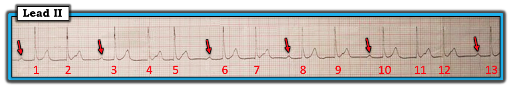
=========================
Chúng ta tiếp tục tìm các dấu hiệu khác của hoạt động nhĩ trong phần còn lại của dải nhịp:
- Nhận xét #3: Dường như có khía trong đoạn ST của các nhát #2, 4, 7, 9 và 11 (các mũi tên VÀNG trong Hình-3). Việc khía này xuất hiện ở xấp xỉ cùng một điểm trên đoạn ST của các nhát #2, 4, 7, 9 và 11 — nhưng không bao giờ xuất hiện ở đoạn ST của nhát thứ 1 trong mỗi nhóm (tức là không có khía ở đoạn ST của các nhát #1, 3, 6, 8 và 10) — gợi ý mạnh rằng khía này không phải do ngẫu nhiên (và không phải do nhiễu) — mà nhiều khả năng nhất đại diện cho hoạt động nhĩ bổ sung!

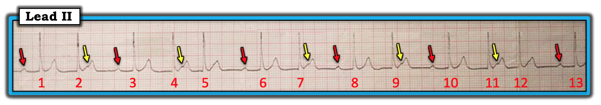
=========================
Nhận xét #4: Dường như có một nhịp nhĩ nền đều (tức là khoảng P-P đều) suốt nhịp trong Hình-3! Điều này không dễ thấy ngay. Chúng ta suy ra sự có mặt của một nhịp nhĩ nền đều theo cách sau.
- Cái thường gặp thì hay gặp. Vì ta biết mỗi sóng P được đánh dấu bằng mũi tên ĐỎ đều được dẫn truyền trong Hình-3 — và vì khoảng cách giữa mũi tên VÀNG và mũi tên ĐỎ nằm giữa các nhát #2-3; #7-8; và 9-10 trông có vẻ bằng nhau — cách giải thích thường gặp nhất (và hợp lý nhất) cho các mũi tên màu ta thấy trong Hình-3 là phải có một nhịp sóng P nền đều.
- Đây chính là lúc COMPA ĐO của bạn phát huy tác dụng! Đặt compa đo bằng khoảng cách giữa mũi tên VÀNG và mũi tên ĐỎ nằm giữa các nhát #7-8. Sau đó, NẾU bạn dời khoảng cách này sang TRÁI bằng compa đo — bạn sẽ rơi đúng vào một chỗ nhọn thêm ở sóng T của nhát #6 (mũi tên XANH trong Hình-4). Chỗ nhọn thêm này là do sóng P đúng lúc tiếp theo xuất hiện cùng lúc với đỉnh sóng T của nhát #6 (mũi tên XANH trong Hình-4).

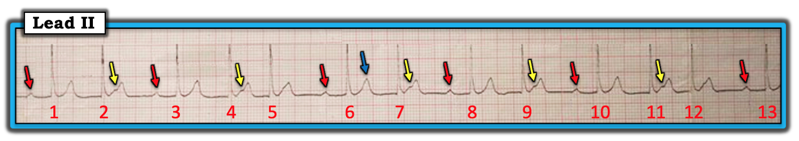
=========================
- Giữ compa đo ở đúng khoảng cách chính xác này — giờ bạn có thể dò tiếp ra các chỗ nhọn thêm ở sóng T của các nhát #1, 3, 6, 8 và 10 — và một khía tinh tế thêm ở sườn lên của sóng T của các nhát #5 và 12 (các mũi tên XANH trong Hình-5). Trên thực tế — các mũi tên màu đều đặn trong Hình 5 xác nhận sự có mặt của một nhịp nhĩ nền đều (các mũi tên XANH).

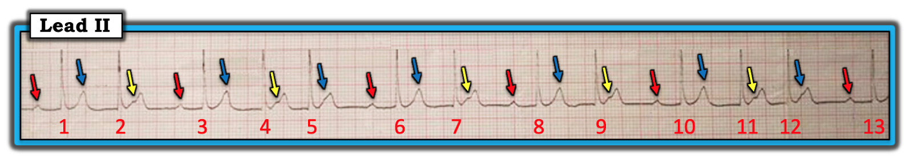
=========================
Nhận xét #5: Sau khi xác định nhịp nhĩ nền là đều — ta thấy rõ rằng hầu hết "Dấu chân của Wenckebach" đều có mặt ở nhịp trong Hình-5. Điều này gợi ý nhịp là blốc AV độ 2, Mobitz loại I ( = Wenckebach AV). Đây là những "Dấu chân" mà ta thấy:
- Nhịp theo nhóm.
- Khoảng PR dài dần cho đến khi một nhát bị rớt — sau đó chu kỳ lặp lại và khoảng PR ngắn lại.
- Nhịp nhĩ đều (tức là khoảng P-P đều, hoặc ít nhất là khá đều).
- Khoảng ngưng chứa nhát bị rớt ngắn hơn hai lần khoảng R-R ngắn nhất.
- Khoảng R-R ngắn dần trong mỗi nhóm nhát, cho đến khi một nhát bị rớt.
=========================
ĐIỂM THEN CHỐT (PEARL) ( = Vượt ra ngoài phần cốt lõi): Ngoài nhịp theo nhóm — còn một số đặc điểm khác gợi ý một tính chu kỳ phù hợp với một dạng dẫn truyền Wenckebach nào đó. Marriott đã gọi những đặc điểm này bằng cái tên đầy hình ảnh “Dấu chân của Wenckebach”. Chúng tôi nhấn mạnh rằng dẫn truyền Wenckebach không phải lúc nào cũng biểu hiện đủ từng dấu hiệu này — nhưng nhận ra có một vài đặc điểm trong số đó đã góp phần rất lớn vào việc gợi ý chẩn đoán!
- “Dấu chân” được biết đến nhiều nhất (và dễ nhận ra nhất) — là nhịp theo nhóm . Như chúng tôi đã nhấn mạnh ở Nhận xét #1 — có 3 nhóm 2 nhát, và 2 nhóm 3 nhát trong Hình-5.
- Dù blốc AV độ 2 Mobitz I được định nghĩa là khoảng PR dài dần cho đến khi một nhát bị rớt — không phải ca dẫn truyền Wenckebach nào cũng “đúng như sách giáo khoa”. Như ta sẽ thấy ngay sau đây — ca này hơi không điển hình — ở chỗ khoảng PR tăng từ nhát thứ 1 sang nhát thứ 2 trong một nhóm, nhưng không tăng từ nhát thứ 2 sang nhát thứ 3 trong một nhóm.
- Theo định nghĩa — nhịp nhĩ (khoảng P-P) phải đều (hoặc ít nhất là gần như đều) khi có blốc AV. Tôi rất thích “dấu chân” này — vì nhận ra nhịp nhĩ nền không đều rõ rệt là “manh mối” tốt nhất cho thấy bạn đang đối mặt với một thứ khác với Wenckebach AV (tức là PAC, khoảng ngưng xoang hay ngưng xoang, v.v.).
- 2 “dấu chân” cuối cùng thường không được chú ý. Khoảng R-R ngắn nhất trong Hình-5 là các khoảng giữa các nhát #4-5 và #11-12. Dùng compa đo sẽ dễ thấy mỗi khoảng ngưng (tức là khoảng giữa các nhát #2-3; #5-6; #7-8; #9-10; và #12-13) đều ngắn hơn hai lần khoảng R-R ngắn nhất. Mối liên hệ này thường không thấy khi nguyên nhân của nhịp theo nhóm là khoảng ngưng xoang hay PAC.
- Với các nhóm Wenckebach gồm 3-nhát-trở-lên — khoảng R-R trong nhóm có xu hướng ngắn dần. Lý do là — mức tăng thêm (tức là độ tăng) lớn nhất của khoảng PR trong Wenckebach điển hình thường nằm giữa nhát thứ 1 và nhát thứ 2 trong nhóm. Vì vậy, trong Hình-5 — lưu ý rằng khoảng R-R giữa các nhát #3-4 dài hơn khoảng R-R giữa các nhát #4-5. Tương tự, khoảng R-R giữa các nhát #10-11 dài hơn khoảng giữa các nhát #11-12. Nhận ra mối liên hệ này đặc biệt hữu ích để nhận biết dẫn truyền Wenckebach khi không có sóng P (tức là với AFib) và khi có blốc SA. (LƯU Ý: Khoảng R-R không phải lúc nào cũng ngắn dần trong các nhóm có dẫn truyền Wenckebach — nhưng đây là một đặc điểm hữu ích khi có mặt.).
ĐIỀU CỐT LÕI: Với nhịp trong Hình-1 — việc tôi quen tìm “Dấu chân của Wenckebach” đã giúp tôi nghi ngờ chẩn đoán loạn nhịp này trong chưa tới 10 giây! Đó là vì tôi ngay lập tức nhận ra nhịp theo nhóm — kế đó tôi nhận ra nhát thứ 1 trong mỗi nhóm chắc chắn được dẫn truyền — và tôi thấy những gì trông như khía và/hoặc chỗ nhọn thêm cách đều nhau, gợi ý mạnh một nhịp nhĩ nền đều. Xác nhận tính đều của nhịp nhĩ nền này chỉ mất vài giây nhờ dùng compa đo — và các mối liên hệ này, cùng với "diện mạo chung" của loạn nhịp này, đủ để gợi ý mạnh cho tôi rằng đây là dẫn truyền Wenckebach.
- Chúng tôi dành ECG Blog #236 cho chủ đề blốc AV độ 2. Chúng tôi làm nổi bật "Dấu chân của Wenckebach", bắt đầu từ phút 1:20 trong Video Pearl dài 15 phút của bài blog đó.
=========================
=========================
THỬ THÁCH: Hãy TỰ CHỨNG MINH cho chính mình việc nắm được “Dấu chân của Wenckebach” có thể hữu ích đến mức nào.
- Bây giờ bạn mất bao lâu để nghi ngờ đúng chẩn đoán nhịp trong ECG Blog #55 của chúng tôi?
=========================
Nhận xét cuối cùng của chúng tôi: Một số loạn nhịp phức tạp có thể có nhiều hơn một cách đọc nhịp hợp lý. Cách để CHỨNG MINH cách đọc của bạn là một trong những cách giải thích hợp lý — là vẽ một giản đồ bậc thang (laddergram) hợp lý, minh họa cho giả thuyết của bạn.
- LỜI THÚ NHẬN: Tôi đã mất nhiều năm mới cảm thấy thoải mái khi vẽ giản đồ bậc thang. “Tin tốt” — là chỉ cần không quá vài phút (và một chút luyện tập) để cảm thấy thoải mái khi đọc giản đồ bậc thang. Giản đồ bậc thang của chúng tôi cho nhịp trong ca này được trình bày ở Hình-6. Phần giải thích diễn biến nằm trong chú thích hình.
- LƯU Ý: Để biết thêm về những điều cơ bản về CÁCH Đọc (và/hoặc Vẽ) giản đồ bậc thang — Mời xem ECG Blog #188 của tôi —

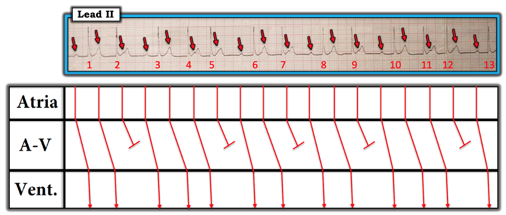
ĐIỀU CỐT LÕI: Dù có đặc điểm hơi không điển hình này ở hai nhóm 3 nhát — tôi cho rằng giản đồ bậc thang này xác nhận chẩn đoán có khả năng nhất cho nhịp này là nhịp xoang kèm blốc AV độ 2, Mobitz loại I ( = Wenckebach AV), trong đó có dẫn truyền AV 4:3 ( = 4 sóng P, trong đó chỉ 3 sóng được dẫn truyền với các nhát #3,4,5; và #10,11,12) — và — dẫn truyền AV 3:2 ( = 3 sóng P, trong đó chỉ 2 sóng được dẫn truyền với các nhát #1-2; #6-7; và #8-9).
Đính chính: Tôi xin CẢM ƠN Wai Shein — vì "con mắt tinh tường" đã phát hiện lỗi trong phần mô tả ban đầu của tôi về Hình-6 — nay tôi đã sửa lại = ngày 9 tháng 5, 2024).
=========================
PHẦN BỔ SUNG: Dành cho những ai muốn xem cách tiếp cận từng bước được dùng để đi tới giản đồ bậc thang tôi đưa ra ở Hình-6 — tôi đã thêm các Hình #7-đến-13.
- BẤM vào Hình #7 — hình sẽ được phóng to. Sau đó chuyển lần lượt từng hình một qua 6 Hình tiếp theo ở chế độ phóng to để xem cách tiếp cận từng bước của chúng tôi khi vẽ giản đồ bậc thang này.
=========================

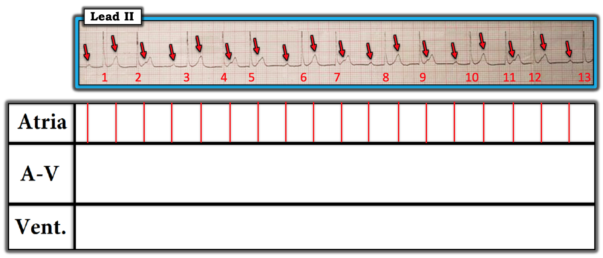
=========================

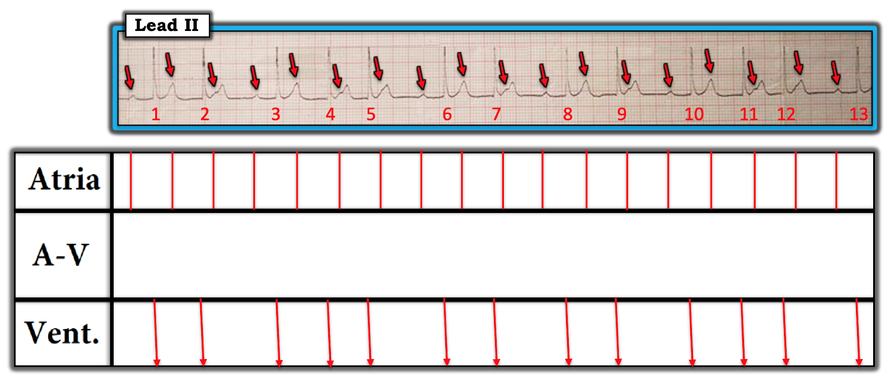
=========================

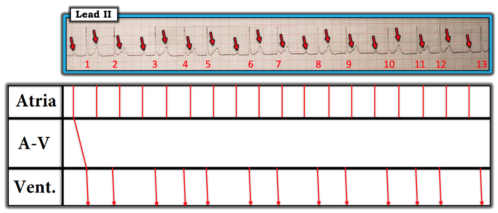
=========================

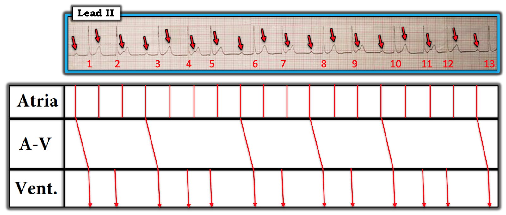
=========================

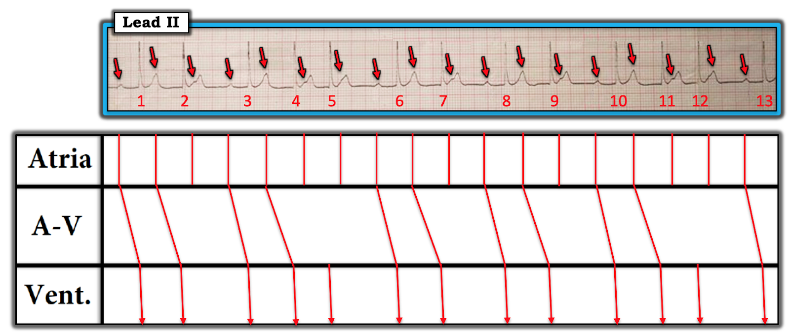
=========================

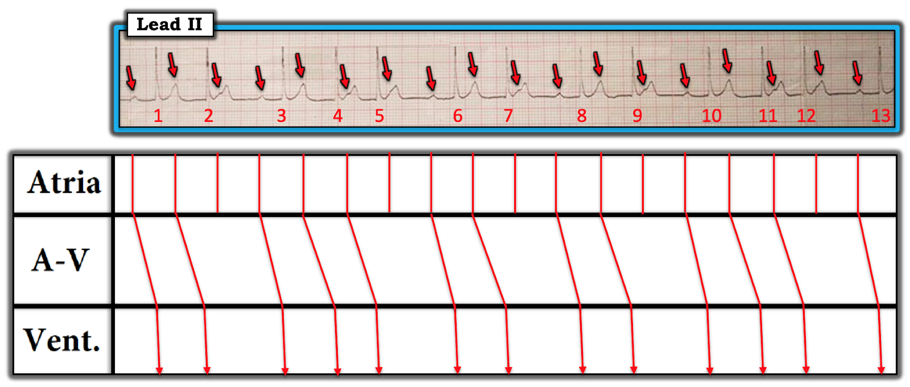
=========================

=========================
LỜI CẢM ƠN: Tôi xin CẢM ƠN Thant Sin Win (đến từ Myanmar) đã cho phép tôi sử dụng bản ghi và ca lâm sàng này.
=========================